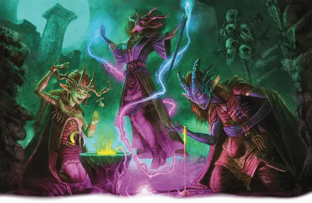

Ведьмовская кровь
Hexblood

Тип существа Фея
Размер Средний (рост около 4–7 футов) или Маленький (рост около 2–4 футов); выберите при выборе этого вида
Скорость 30 футов
Ведьмовской кровью называют тех, в чьих жилах бурлит фейская магия, результат воздействия потусторонней энергии или таинственного колдовства. Многие из них стали такими, заключив сделку с могущественной каргой, но и воздействие иных чуждых сил может привести к рождению Ведьмовской крови. Магия фей проявляет себя сверхъестественным предвидением и очарованием.
Особенности
Вы обладаете следующими особенностями вида:
Тёмное зрение. Вы обладаете Тёмным зрением дальностью 60 футов.
Мистический маркер. Вы можете Бонусным действием создать магический маркер, безвредно отрезая локон волос, ноготь или аналогичным методом. Пока этот маркер существует, вы обладаете следующими преимуществами:
Дальнее послание. Действием Магия вы можете послать существу, носящему или несущему маркер, телепатическое послание не более 25 слов длиной, если это существо находится в пределах 10 миль от вас.
Наблюдение. Если вы находитесь в пределах 10 миль от маркера, вы можете действием Магия воспринимать окружение вокруг маркера, используя ваши чувства; вы можете делать это в течение 1 минуты, пока не станете Недееспособны или пока не окончите это восприятие (действий не требуется). В течение этого времени вы видите и слышите через маркер, как если бы находились там же, где и знак. По окончанию этого эффекта маркер безвредно уничтожается.
Если маркер не уничтожается раньше, он существует, пока вы не завершите Долгий отдых. Создав мистический маркер с помощью этой особенности, вы не можете сделать этого снова, пока не завершите Долгий отдых.
Ведьмовская магия. У вас всегда подготовлены заклинания Маскировка и Сглаз. Вы можете сотворить каждое из них без ячейки заклинаний, и вы восстанавливаете возможность сотворить это заклинание таким образом снова по завершении Долгого отдыха. Вы также можете сотворять эти заклинания, используя имеющиеся у вас ячейки подходящих уровней. Ваша заклинательная характеристика для этих заклинаний — Интеллект, Мудрость или Харизма; вы выбираете заклинательную характеристику, когда выбираете этот вид.